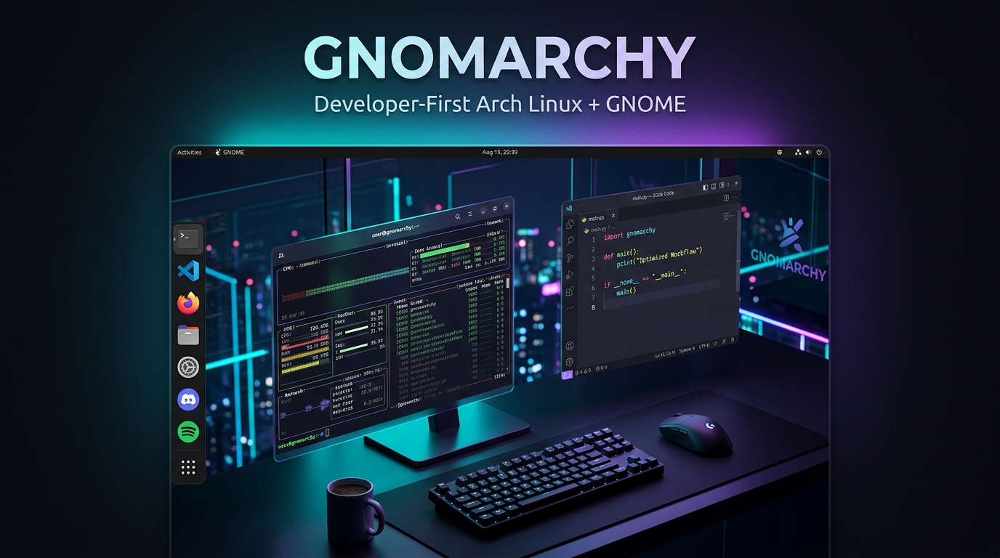

Vibe your way through every alteration, tweak, or troubleshooting session. Gnomarchy combines the rolling release power of Arch Linux, atomic Btrfs + Snapper rollbacks, and agentic AI developer tooling—with the rock-solid, fluid beauty of GNOME 50 and Wayland.

Omarchy proved how exhilarating an agent-driven Linux operating system can be. Gnomarchy brings that exact developer freedom to GNOME, giving you rock-solid hardware stability, effortless display scaling, and a tactile workflow.
Avoid the rigid traps and cognitive overload of automatic tiling window managers. Press Super + T to summon an instant keyboard grid overlay and snap windows exactly where you want them.
Experiment fearlessly. Gnomarchy runs on structured Btrfs subvolumes with automated Snapper snapshots before every pacman upgrade or agent refactor. Roll back instantly right from the Limine boot menu.
Tap Super + D to speak anywhere. Powered by local, offline Whisper AI models with PipeWire audio capture. Zero cloud fees, zero latency, and zero telemetry—your voice never leaves your machine.
Turn web tools into first-class desktop citizens with isolated profiles, auto-fetched high-res favicons, and GNOME Dash to Dock pinning: Claude, Linear, ChatGPT, Notion, and Basecamp.
Contextual right-click actions built right into GNOME Files: instant video compression down to 25MB for Discord/Slack, animated GIF creation, MP3 extraction, WebP conversion, and EXIF wiping.
An operating system designed for Claude Code, Antigravity, and OpenCode. Comes with pre-installed AGENTS.md protocol rules and lifecycle event hooks in ~/.config/gnomarchy/hooks/.
A single command restyles the entire operating system: GNOME Libadwaita accent color, dark/light mode, wallpapers, Alacritty terminal, Neovim, and btop. Pick a theme below—or press T to flip through them live.
Control your desktop, create web apps, trigger AI dictation, boot Windows VMs, and create snapshot rollbacks with one intuitive utility.
Engineered for developers who love the terminal. Keep your hands on the home row with curated, conflict-free hotkeys.
Gnomarchy includes automatic hardware detection and tested workarounds for tricky laptop models, hybrid GPUs, and modern chipsets.
Give your 2018-2020 Intel MacBook Pro, Air, or Mac Mini a lightning-fast rebirth. Built-in kernel modules support Apple T2 audio, keyboard, touchpad, and WiFi.
Native support for Framework modular laptops with optimal ambient light sensor auto-brightness, suspend-then-hibernate power profiles, and display scaling.
Out-of-the-box support for Asus ROG laptops with supergfxctl GPU mode switching, ROG fan profiles, and modern NVIDIA proprietary Wayland drivers.
Cutting-edge rolling Arch kernel (6.13+) with full support for Intel Core Ultra, Panther Lake hybrid core scheduling, and integrated Arc graphics.
Tuned memory footprints, Zram swap compression, and stripped background daemons mean even older ThinkPads with 4GB RAM run crisp and responsive.
Integrated with Flathub and shipped with Bazaar, the beautiful native GNOME Flatpak store. Install Spotify, VS Code, Obsidian, and Slack with one click.
Transparent, opinionated, and open source. Here is what powers the Gnomarchy distribution:
████████████████████████████████████████████████████████████████████████ Arch Rolling Base ████████████████████████████████ 100% Bleeding Edge GNOME 50 Polish ████████████████████████████ 99.8% Wayland Native Snapper Safety Net ████████████████████████ 100% Atomic Rollbacks Local AI Dictation ████████████████████ 0 Cloud Fees · 100% Offline Fast Shutdown Limit ████████████ 10s Max Timeout (No 90s Hangs) ████████████████████████████████████████████████████████████████████████
Real experiences from engineers switching to Gnomarchy.
“I loved Omarchy’s vision of an agent-driven OS, but I rely heavily on multi-monitor fractional scaling for my 4K displays. Gnomarchy gave me the exact same agentic developer stack with GNOME's bulletproof Wayland compositor. It is the dream workstation.”
“The Tactile window tiling (Super + T) is pure genius. I don’t want windows jumping around randomly every time a terminal opens, but I still want instant keyboard snapping. Gnomarchy nailed the balance.”
“Voxtype dictation on Super + D running local Whisper is magic. I dictate git commit messages, code comments, and chat responses without touching my mouse or paying OpenAI token fees.”
Be up and running with a complete developer desktop in less than two minutes.